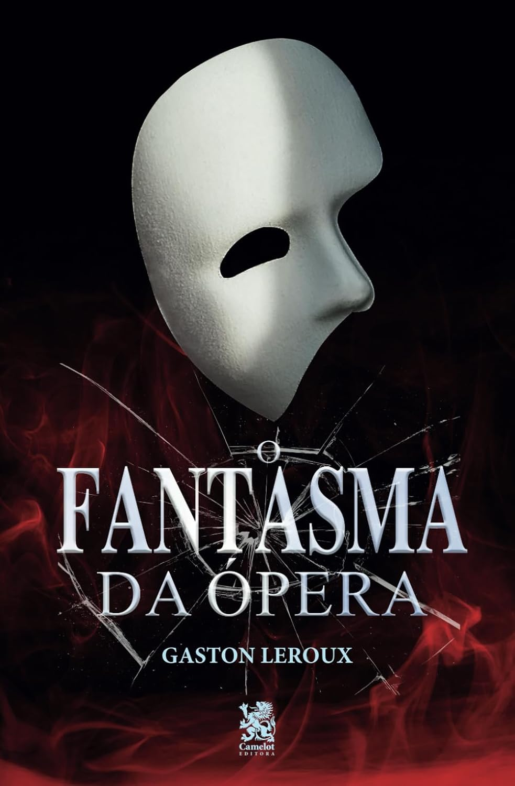

O Fantasma da Ópera
Com mais de um século de existência, “O Fantasma da Ópera” é uma obra que ultrapassou
gerações e ainda é capaz de envolver o leitor em sua trama intensa e emocionante. Com sua
escrita elegante e rica em detalhes, Gaston Leroux nos conduz pelos labirintos da Ópera de
Paris, onde o misterioso Fantasma espalha o terror entre os seus habitantes.
Learn More

O Código da Vinci
Um assassinato no Museu do Louvre traz à tona uma sinistra conspiração para revelar um
segredo que foi protegido por uma sociedade secreta desde os tempos de Jesus Cristo.
A vítima é o curador do museu, Jacques Saunière, um dos líderes dessa fraternidade, o
Priorado de Sião, que já teve como membros Leonardo da Vinci, Victor Hugo e Isaac Newton.
Pouco antes de morrer, ele consegue deixar uma mensagem cifrada na cena do crime. Apenas sua
neta, a criptógrafa Sophie Neveu, e Robert Langdon, um famoso simbologista de Harvard, podem
desvendá-la.
Os dois se transformam em suspeitos e em detetives enquanto percorrem as ruas de Paris e de
Londres tentando decifrar um intricado quebra-cabeça que pode lhes revelar um segredo
milenar que envolve a Igreja Católica.
Poucos passos à frente das autoridades e do assassino, Sophie e Robert buscam pistas nas
obras de Da Vinci e se debruçam sobre alguns dos maiores mistérios da cultura ocidental – da
natureza do sorriso da Mona Lisa ao significado do Santo Graal.
Mesclando com perfeição suspense, informações sobre obras de arte, documentos e rituais
secretos, Dan Brown consagrou-se como um dos autores mais brilhantes da atualidade.
Learn More

O colecionador de ossos
Merit Voss está cansada de guardar os segredos de sua família e decide que chegou a hora
de desaparecer. Mas antes de sumir do mapa, ela vai revelar um por um, tudo que a
família vem guardando por anos.
A cerca branca ao redor da sua casa é a única coisa normal na vida de Merit. Parte de
uma família peculiar e cheia de segredos, ela mora em uma antiga igreja, batizada de
Dólar Voss. A mãe, curada de um câncer, mora no porão, e o pai e o restante da família,
no andar de cima. Isso inclui sua nova esposa, a ex-enfermeira da ex-mulher, o pequeno
Moby, fruto desse relacionamento, o irmão mais velho, Utah, e a gêmea idêntica de Merit,
Honor. E, como se a casa não tivesse cheia o bastante, ainda chegam o excêntrico Luck e
o misterioso Sagan. Mas Merit sente que é o oposto de todos ali.
Learn More

O Hobbit
Bilbo Bolseiro era um dos mais respeitáveis hobbits de todo o Condado até que, um dia, o mago
Gandalf bate à sua porta. A partir de então, toda sua vida pacata e campestre soprando anéis
de fumaça com seu belo cachimbo começa a mudar. Ele é convocado a participar de uma aventura
por ninguém menos do que Thorin Escudo-de-Carvalho, um príncipe do poderoso povo dos Anãos.
Esta jornada fará Bilbo, Gandalf e 13 anãos atravessarem a Terra-média, passando por
inúmeros perigos, como os imensos trols, as Montanhas Nevoentas infestadas de gobelins ou a
muito antiga e misteriosa Trevamata, até chegarem (se conseguirem) na Montanha Solitária. Lá
está um incalculável tesouro, mas há um porém. Deitado em cima dele está Smaug, o Dourado,
um dragão malicioso que... bem, você terá que ler para descobrir.
Lançado em 1937, O Hobbit é um divisor de águas na literatura de fantasia mundial. Mais de
80 anos após a sua publicação, o livro que antecede os ocorridos em O Senhor dos Anéis
continua arrebatando fãs de todas as idades, talvez pelo seu tom brincalhão com uma pitada
de magia élfica, ou talvez porque J.R.R. Tolkien tenha escrito o melhor livro infantojuvenil
de todos os tempos.
Learn More